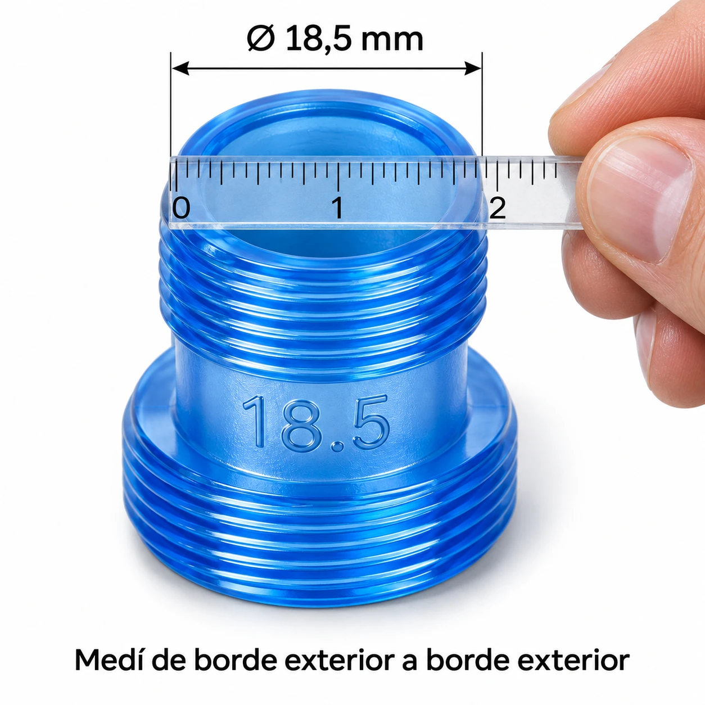

Contanos cómo es la punta de tu canilla y te mostramos qué pieza usar, si ya viene en la caja y cómo instalarla paso a paso.
1
¿Cómo es la punta de tu canilla?
Sacá el aireador (la pieza con rejilla de la punta) girándolo a mano y mirá dónde queda la rosca.
2
Diámetro de la rosca
¿No sabés medir? Mirá .
¿No está tu canilla? Medila con la guía y buscá por medida, o mandanos una foto de la punta a info@drago.com.ar.
Cómo medir tu canilla en 3 pasos
Sacá el aireador. Es la pieza de la punta con una rejilla. Se desenrosca a mano girando en sentido antihorario. Si está duro, envolvelo en un trapo y usá una pinza con cuidado para no rayar el cromo.
Mirá dónde está la rosca. Si los filetes quedan del lado de afuera del pico, es rosca por fuera. Si quedan adentro del agujero, es rosca por dentro. Si no hay filetes, es sin rosca.
Medí el diámetro. Con calibre es lo más preciso. Con una regla:
Rosca por fuera: de borde exterior a borde exterior de los filetes.
Rosca por dentro: el ancho del agujero de pared a pared, pasando por el centro.

Ejemplo de rosca por fuera: medí de borde exterior a borde exterior. Este adaptador mide Ø 18,5 mm.
Tip: el aireador que sacaste también sirve. Si el aireador tiene la rosca por dentro, tu canilla la tiene por fuera, y al revés. En las canillas con rosca por fuera lo más común es 22 mm (con regla suele medir entre 21,5 y 22 mm). En las de rosca por dentro la medida varía según la marca y el modelo: medila siempre antes de elegir el adaptador.
Si pierde agua
Revisá en este orden. La mayoría de las pérdidas se resuelven en los primeros dos pasos.
Piezas de conexión
Glosario
¿Todavía no tenés tu purificador?
Ya sabés qué adaptador va: elegí el modelo que mejor te sirve.